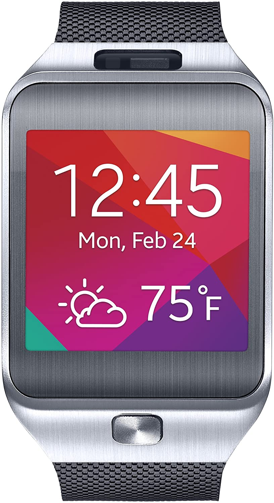

Samsung Gear 2 (samsung-rinato)
|

Front view of a Gear 2 |
|
| Manufacturer | Samsung |
|---|---|
| Name | Gear 2 |
| Codename | samsung-rinato, samsung-sm-r380 |
| Released | 2014 |
| Category | testing |
| Original software | Tizen |
| Hardware | |
| Chipset | Exynos 3250 |
| CPU | Dual-core 1.0 GHz Cortex-A7 |
| GPU | Mali-400 MP2 |
| Display | 320x320 AMOLED |
| Storage | 4 GB |
| Memory | 512 MiB |
| Architecture | armv7 |
| Non-Android based device | ✔ |
{kind=link}
| USB Networking |
|
|---|---|
| Flashing |
|
| Touchscreen |
|
| Display |
|
| WiFi |
|
| FDE |
|
| Mainline |
|
| Battery |
|
| 3D Acceleration |
|
| Audio |
|
| Bluetooth |
|
| Camera |
|
| GPS |
|
| Mobile data |
|
| SMS |
|
| Calls |
|
| USB OTG |
|
| NFC |
|
| Accelerometer |
|
|---|---|
| Magnetometer |
|
| Ambient Light |
|
| Proximity |
|
| Hall Effect |
|
| Barometer |
|
| Power Sensor |
|
| Keyboard |
|
|---|---|
| Touchpad |
|
| USB-A |
|
| HDMI/DP |
|
| Ir TX |
|
| TrustZone |
|
| FOSS bootloader |
|
The Samsung Gear 2 originally runs Samsungs Tizen operating system, which is based on Linux.
Contributors
How to enter flash mode
If your Gear 2 is not linked to a Samsung phone, you have to bypass the first screen. Click around 20 times on the watch symbol until the Bluetooth message pops up, then wait until it disappears and then long press the watch symbol once. See this video.
Long press Power to force a reboot (the regular software restart button does not work for accessing the menu), then press Power quickly multiple times to go into the boot menu. You can navigate to downloading mode by pressing Power and then waiting a few seconds.
Mainline
The device has mainline support, added by Samsung. See here
Needs this patch to get the kernel to load on a retail unit.
Mainline does not currently boot very far, seems to be stuck on Exynos DRM.
GUI
See AsteroidOS
External links
Notes
-
Android Wear cmdline:
console=ram loglevel=4 no_console_suspend androidboot.selinux=disabled root=/dev/mmcblk0p8 rw rootfstype=ext4 rootwait sec_debug.enable=0 sec_debug.enable_user=0 sec_watchdog.sec_pet=5 sec_log=0x200000@0x46000000 androidboot.serialno=redacted tizenboot.emmc_checksum=3 tizenboot.odin=1 bootloader.ver=R380XXU0BOA2 bootloader.fb=0x48000000 bootloader.log=0x15d5@0x4603ceef
-
Tizen cmdline:
console=ram loglevel=4 root=/dev/mmcblk0p15 ro rootfstype=ext4 rootwait bootmode=normal pwron.reason=ap:swrst,pmic:acok sec_debug.enable=0 sec_debug.enable_user=0 sec_watchdog.sec_pet=5 sec_log=0x200000@0x46000000 lcdtype=0 oops=panic pmic_info=1875 sysscope=0xee000000 cordon=310baa3d7e5cd27155b0d44028aebdfd serialno=redacted tizenboot.emmc_checksum=3 tizenboot.odin=1 bootloader.ver=R380XXU0BOA2 bootloader.fb=0x48000000 bootloader.log=0x157d@0x46028ee5